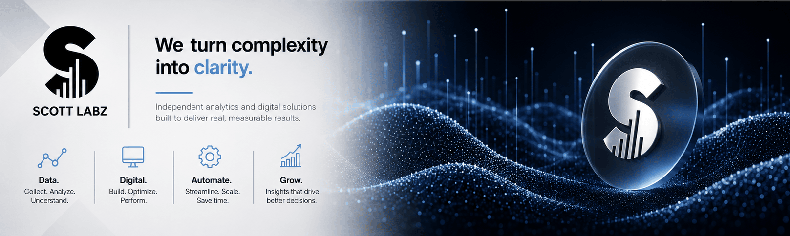

Industries We Serve.
Every vertical features distinct data flows, compliance standards, and operating bottlenecks. We engineer solutions built specifically for your sector.
Precision solutions across diverse operational landscapes.
From highly regulated institutional data flows to high-volume commercial environments, we build platforms designed to hold up under real-world pressure.
Vertical Expertise & Solutions
Ecommerce
Implementing advanced server-side tracking to capture clean data, building lightning-fast storefront architectures, and fine-tuning the checkout flow to reduce friction and turn casual visitors into loyal buyers.
Retail
Connecting online interactions with physical stores through omnichannel conversion attribution, keeping point-of-sale data completely synchronized, and managing localized multi-store inventory so customers always find what they need.
Professional Services & Consulting
Focusing on client portal infrastructure, secure intake form tracking, and automation to streamline client acquisition and elevate operational efficiency.
Non-Profits
Streamlining donor attribution tracking, optimizing impact reporting dashboards, and building secure digital donation platforms that maximize community reach and trust.
Higher Education & Athletics
Fan engagement analytics, gameday digital platform optimization, and high-traffic ticketing infrastructure.
Real Estate & Property Management
Integrating multi-location listing performance metrics, optimizing property search interfaces, and building reliable lead generation tracking to connect buyers with available properties.
Hospitality & Local Services
Optimizing booking engines, maximizing local SEO visibility, and setting up robust customer review and retention tracking pipelines to turn local searchers into repeat guests.
Healthcare
Safeguarding patient tracking with secure telemetry, building HIPAA-compliant data workflows that protect sensitive records, and modernizing legacy databases so healthcare systems run smoothly and reliably.
Legal & Professional Practice
Implementing secure document management telemetry, optimizing intake workflows for law firms, and automating client communication and scheduling systems.
Agriculture
Connecting operational, customer, and marketing data to improve decision-making across farming, equipment, agribusiness, and agricultural retail. Building analytics, automation, and digital experiences that help organizations operate more efficiently and uncover opportunities for growth.
SaaS & Tech
Tracking how people actually use your software to find what works best, following the customer journey from their first click to sign-up, and fine-tuning your conversion paths so more trial users become long-term subscribers.
Enterprise
Developing custom API integrations that bridge communication gaps, establishing centralized cross-departmental data warehousing, and provisioning scalable cloud infrastructure designed to unify large, growing organizations.
Partner With Scott Labz
Based in Bloomington-Normal, Illinois, we partner with growing organizations to turn complex data into clear, actionable growth
Get in Touch